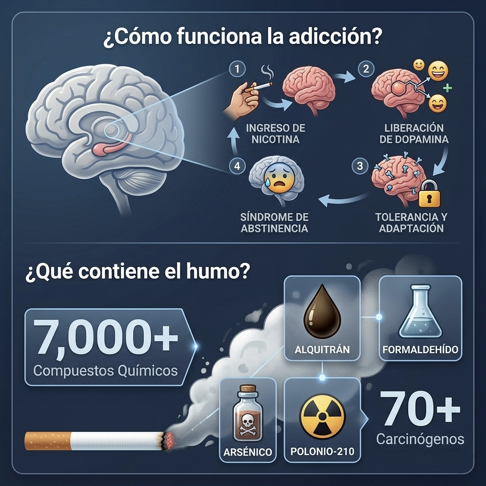

Una enfermedad crónica, no un mal hábito
El tabaquismo es reconocido por la OMS como una enfermedad adictiva crónica. La nicotina engancha al cerebro con la misma fuerza que otras drogas duras: por eso "echarle ganas" casi nunca alcanza. Con tratamiento médico, las probabilidades de éxito se triplican.
La nicotina llega a tus neuronas y libera dopamina más rápido que una inyección intravenosa. Por eso el cigarro "calma" — y por eso engancha.
Comparado con intentarlo solo, el acompañamiento médico con farmacoterapia y consejería multiplica por tres las probabilidades de dejar de fumar a largo plazo.
Los cuatro frentes de la dependencia
Fumar no es una sola adicción: son cuatro mecanismos que refuerzan el hábito a la vez. Un buen tratamiento ataca todos, no solo la parte química.
La nicotina activa el sistema dopaminérgico de recompensa más rápido que cualquier otra droga.
El cigarro queda asociado a rutinas diarias: el café, el estrés, los descansos.
Nicotina como regulador de ansiedad, estrés e irritabilidad — una muleta emocional.
El entorno de fumadores y los rituales sociales refuerzan el hábito fuera del plano químico.

La cadena de daño cuando no se trata
El tabaco no ataca un solo órgano: activa un efecto dominó. Cada ficha que cae empuja a la siguiente.
Lo que pasa cuando apagas el último cigarro
La recuperación empieza en minutos y se acumula durante años. Este reloj no miente: cada día sin fumar es una ganancia medible.
Presión arterial y frecuencia cardiaca regresan a valores normales.
El monóxido de carbono en sangre baja: más oxígeno a tus tejidos.
Mejora la circulación y la función pulmonar medible en espirometría.
Tu riesgo de infarto cae a la mitad respecto a un fumador activo.
Riesgo de cáncer de pulmón reducido a la mitad. Expectativa de vida casi equiparada.
Así detenemos la dependencia, paso a paso
La primera cita mide qué tan fuerte es tu dependencia, qué tanto ha afectado ya a tus pulmones y qué tratamiento se ajusta mejor a tu historia. A partir de ahí armamos un plan realista, con fecha de corte y seguimiento.
Cuantifica tu nivel real de dependencia para elegir fármaco y dosis.
Mide el monóxido de carbono en tu aliento: evidencia objetiva del daño y de tus avances.
Revisa si ya hay daño pulmonar y ayuda a prevenir EPOC establecida.
Bupropión o terapia de reemplazo de nicotina (parches, chicles, pastillas): reducen la abstinencia y el deseo intenso de fumar.
Estrategias prácticas para manejar disparadores, ansiedad y recaídas sin culpa.
Consultas breves para ajustar dosis, celebrar avances y blindar el resultado.
Dejar de fumar
no es solo fuerza de voluntad
es cuestión de tratamiento
Con acompañamiento médico las probabilidades se triplican. Salimos de la consulta con un plan, una fecha de corte y el fármaco adecuado para tu nivel de dependencia.